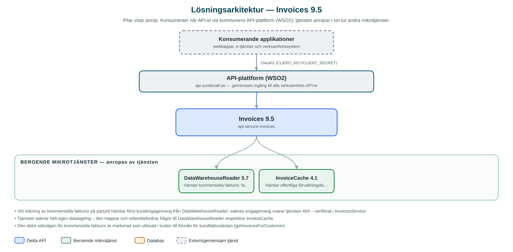

Invoices
Samlad ingång för fakturauppgifter – hämtar kommersiella fakturor och offentliga förvaltningsfakturor från underliggande källor och levererar dem i ett gemensamt format.
Om API:et
Invoices ger kommunens applikationer en gemensam väg till fakturainformation, oavsett var fakturorna kommer ifrån. API:et delar upp fakturor i två ursprung: kommersiella fakturor (till exempel el- och fjärrvärmefakturor från de kommunala bolagen) som hämtas via DataWarehouseReader, och offentliga förvaltningsfakturor som hämtas från InvoiceCache.
Anroparen söker med partyId, fakturanummer, OCR-nummer, datumintervall eller anläggnings-id, och tjänsten översätter parametrarna till rätt fråga mot rätt källa. För kommersiella fakturor löses partyId först upp till kundnummer via kundengagemang i DataWarehouseReader. Fakturor kan även hämtas som PDF via InvoiceCache.
Tjänsten är ett rent aggregerings-API utan egen datalagring – all information hämtas i realtid från de underliggande tjänsterna, med circuit breakers som skydd mot störningar.
Det här gör API:et
- Fakturasökning per ursprung – Sökning av fakturor uppdelat på kommersiella fakturor och offentliga förvaltningsfakturor, med gemensamt svarsformat.
- Sökning via part – PartyId löses upp till kundnummer via kundengagemang i DataWarehouseReader innan kommersiella fakturor hämtas.
- Fakturadetaljer – Detaljerade fakturarader för en enskild kommersiell faktura.
- Faktura-PDF – Hämtning och nedladdning av fakturor i PDF-format via InvoiceCache.
- Kundfakturalistor – Fakturor för en eller flera kunder med filtrering på period, status och anläggning samt paginering och sortering.
API-dokumentation
API:ets samtliga resurser, parametrar och datamodeller finns beskrivna i en OpenAPI-specifikation som är hämtad ur källkodsförrådet. Den kan utforskas interaktivt i Swagger UI eller laddas ner som YAML. Programvaruförteckningen (SBOM) listar tjänstens samtliga tredjepartskomponenter med version och licens.
Teknisk dokumentation
Nedan beskrivs hur tjänsten är uppbyggd, vilka andra tjänster den anropar och vad som krävs för att driftsätta den. Informationen är härledd ur källkoden och dess konfiguration på GitHub.
Arkitektur

API:et är en mikrotjänst (Java 25, Spring Boot via kommunens gemensamma tjänsteplattform dept44 (8.0.8), byggd med Maven). Konsumenter når tjänsten via kommunens gemensamma API-plattform (WSO2) på api.sundsvall.se – tjänsten anropas aldrig direkt. Tjänsten anropar i sin tur andra mikrotjänster i kommunens tjänstelandskap.
Teknikstack
- Språk: Java 25
- Ramverk: Spring Boot via kommunens gemensamma tjänsteplattform dept44 (8.0.8), byggd med Maven
- Övrigt: Resilience4j (circuit breakers mot båda beroende tjänsterna), Logbook för anropsloggning
Beroenden till andra mikrotjänster
Tjänsten anropar följande mikrotjänster. Versionerna är hämtade ur källkodens integrationsklienter.
| Tjänst | Version | Användning |
|---|---|---|
| DataWarehouseReader | 5.7 | Hämtar kommersiella fakturor, fakturadetaljer och kundengagemang ur kommunkoncernens datalager. |
| InvoiceCache | 4.1 | Hämtar offentliga förvaltningsfakturor och faktura-PDF:er. |
Programvaruförteckning
Tjänsten bygger på 223 tredjepartskomponenter fördelade på 12 olika licenser. Till skillnad från tabellen ovan, som listar andra mikrotjänster, avses här de programbibliotek som ingår i bygget. Se programvaruförteckningen för hela listan.
Konfiguration och driftsättning
- application.yml med URL och OAuth2-klientuppgifter för DataWarehouseReader och InvoiceCache
- Konfigurerbara timeout-värden per integration
- Ingen databas – tjänsten är tillståndslös och hämtar allt i realtid
- Anrop görs per kommun – municipalityId ingår i API-vägarna
Noterbart ur källkoden
- Vid sökning av kommersiella fakturor på partyId hämtas först kundengagemang från DataWarehouseReader; saknas engagemang svarar tjänsten 404 – verifierat i InvoicesService.
- Tjänsten saknar helt egen datalagring – den mappar och vidarebefordrar frågor till DataWarehouseReader respektive InvoiceCache.
- Den äldre sökvägen för kommersiella fakturor är markerad som utfasad i koden till förmån för kundfakturalistan (getInvoicesForCustomer).
- PDF-innehåll maskeras i anropsloggarna via Logbook-filter, och 4xx-svar från de beroende tjänsterna öppnar inte circuit breakern.
Källkod
Källkoden är öppen och finns hos Sundsvalls kommun på GitHub. I källkodsförrådet finns även instruktioner för att klona, konfigurera och starta tjänsten i egen miljö.